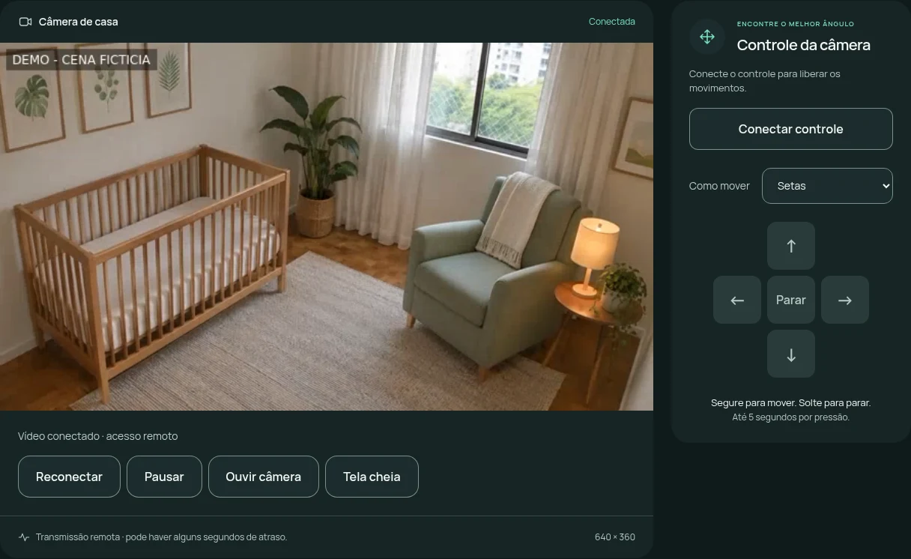

Veja o que acontece
O vídeo ocupa o lugar principal. Setas ou joystick ficam próximos da imagem, inclusive no celular.
VÍDEO · EVENTOS · ROTINAS
Uma câmera, seu notebook e um jeito próprio de acompanhar pelo celular. Em casa ou de longe, com o que importa em primeiro plano.
No iPhone, use o Safari ou adicione à Tela de Início.
 Seu NinhoDemonstração
Seu NinhoDemonstração
UM LUGAR PARA ACOMPANHAR
O vídeo ocupa o lugar principal. Setas ou joystick ficam próximos da imagem, inclusive no celular.
Consulte eventos e receba avisos de movimento. A análise é feita no notebook, com sensibilidade ajustável.
Casa, Fora e Dormir guardam preferências. Horários podem trocar o modo mesmo com a página fechada.
POR ONDE COMEÇAR
Para assistir de longe, mantenha a câmera e o notebook conectados em casa. A ponte prepara o vídeo para o seu navegador.
Ver o passo a passo do Windows ↗Usar no iPhone ↗APLICATIVO ANDROID
Abra esta página no Android para baixar.
O instalador Android existente foi mantido nesta atualização da marca. A nova identidade web chega pela Ponte 1.5; não é necessário reinstalar o Android.
As credenciais são informadas somente no aplicativo. Ao atualizar uma instalação existente, preserve seu certificado e configuração.
Movimento na imagem não confirma que uma criança acordou. Avisos podem atrasar. A ponte precisa continuar ligada e conectada; se o notebook desligar ou perder toda a internet, não consegue enviar um alerta sobre si mesmo.